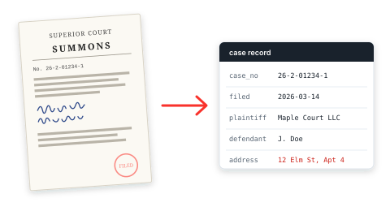
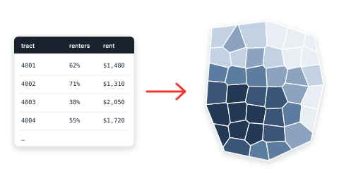

Eviction data across the US.
This map is a census of where eviction data resides. States in red have an ERN analysis.
Under development
We add states and sources as we verify them.
See every state's data →The Housing Precarity Risk Model.
HPRM 2.0 scores census tracts across the contiguous United States for eviction risk and market displacement risk on one 0 to 8 scale.
Explore the model →Free and open source
Our tools.
Eviction records sit in thousands of separate court systems, and few of the organizations that need them can afford to build software to read them. ERN releases the tools behind its research as free, open-source code. Courts, legal aid groups, agencies, and other researchers can use them to collect and analyze eviction data themselves. Anyone can read the code to see how our numbers are made.

Python and R · AGPL-3.0extract-text Under development
extract-text turns eviction court filings, including scanned and handwritten pages, into a table of cases with party names, addresses, and case details. It runs entirely on your own computer, so records never leave your hands. It was validated on more than a million pages of Washington State filings.
Visit the site →
R package · MITneighborhood
The neighborhood package holds R functions for studying neighborhood change with census data. They include racial typologies of census tracts, housing affordability by income level, and the interactive maps and charts used in ERN's state eviction profiles.
View on GitHub →Research for social good
What we do.
The Eviction Research Network collects, analyzes, and maps eviction data and helps other researchers do the same. We use social and data science to measure racial and gender disparities in eviction, and urban theory to explain them.
We study how common eviction is and what drives it in regions with little research. We point readers to other scholars' work. We give legislatures, practitioners, and advocates evidence they can use.
Our research.
Keeping People in Their Homes: the impact of emergency rental assistance on evictions
This neighborhood-level study tests whether $46.6 billion in emergency rental assistance reduced eviction filings. It covers 700+ counties and 12,000+ census tracts in 22 states.
Read more → State profile · 2026Washington eviction filings, 2016–2026
Over the past 38 months, 1 in 44 renter households faced an eviction filing. That is roughly 52% above the pre-pandemic normal. Nine of 39 counties exceed the state rate.
Read more → Cityscape (HUD) · 2024Toward a national eviction data collection strategy using natural language processing
ERN read 111,740 Washington eviction court records from scanned PDF and TIFF images. It then estimated the racial and gender disparities in filings that county-level counts do not show.
Read more →For groups and classes
Evicting the American Dream.
Documentary · 2025 · 51 minutesEvicting the American Dream tells the stories of children and families facing eviction and homelessness. The filmmakers also interview pediatric psychologists, social workers, tenant advocates, housing officials, and eviction lawyers. The film traces the causes of eviction and argues that eviction can be prevented.
Counter Stories Productions, the film arm of Presbyterian Disaster Assistance, made the film. The producers make it available to schools, organizations, and communities that want to host a screening. They also publish a resource guide for the discussion afterward.
Resource guide →Partner with ERN
Working on eviction where the data is thin?
We work with courts, legal aid organizations, agencies, advocates, and universities. We collect and analyze court records, build data pipelines, train collaborators, and co-author research. If you have records no one has analyzed, or need help with the ones you have, get in touch.